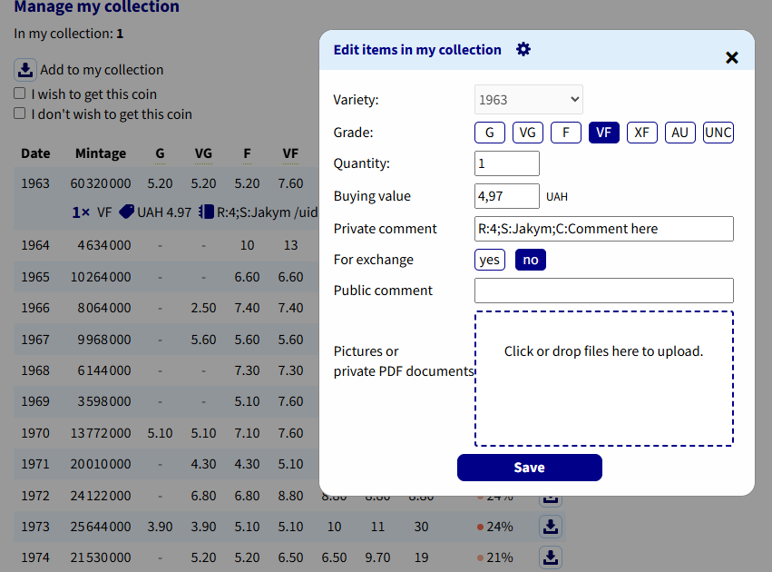

Numista: upload and rarity index

Upload to your Numista collection
One coin: right-click → Upload to Numista. Many: check items → Upload. Only items linked with Numista (#Numista) are uploaded: condition, price, purchase date and comment. Photos are not uploaded. Which of these fields are sent — Numista settings, tab What to upload to Numista.
- Uploaded items get ✓ and are not sent again.
- An item that you have already added on the Numista website is not duplicated: it is linked with that item and gets ✓.
Swap list
Items of the node For swap are uploaded the same way, with the mark for swap: on Numista they are items of your collection that appear in your swap list. The swap note (for example VF-, 50% of price) becomes the public comment that other collectors see; a note marked private: stays in the private comment.
- Moving an uploaded item between the collection and the swap list in the coin card (List) changes the mark on Numista too.
- Import from your Numista collection puts items marked for swap into For swap.
- A repeated import of the uCoin swap list asks whether uploaded items that are no longer in the file should be removed on Numista too.
Private comment
The program writes the comment as attributes Code:value separated by ;:
| Code | Meaning |
|---|---|
S | Swap (uCoin) |
C | Your comment (always last) |
R | Rarity index 0–100 — you add it yourself on Numista |
Rarity index
The Numista API does not provide the rarity index. Copy it from the type page on Numista into the private comment of your
collection item, for example R:9;S:…;C:… — or simply as a number at the beginning: 9 or 9;my comment — then use Read rarity index.
One request reads the whole collection, so check many coins and read them at once.